| # | Equipo | PJ | PTS | G | E | P | GF | GC | DIF | 3 ÚLTIMOS |
|---|---|---|---|---|---|---|---|---|---|---|
| 1 |  Barberà Barberà | 2 | 6 | 2 | 0 | 0 | 8 | 2 | +6 | -GG |
| 2 | 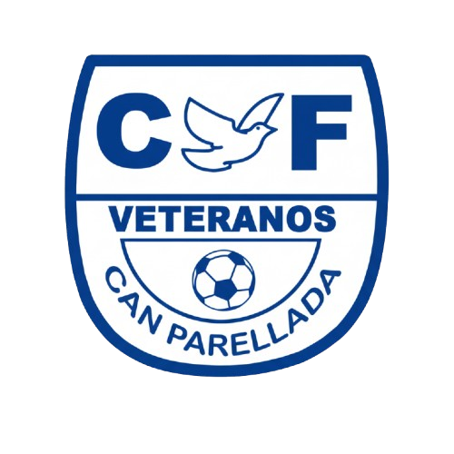 Can Parellada | 2 | 6 | 2 | 0 | 0 | 9 | 5 | +4 | -GG |
| 3 | Castellar | 2 | 6 | 2 | 0 | 0 | 8 | 4 | +4 | -GG |
| 4 | 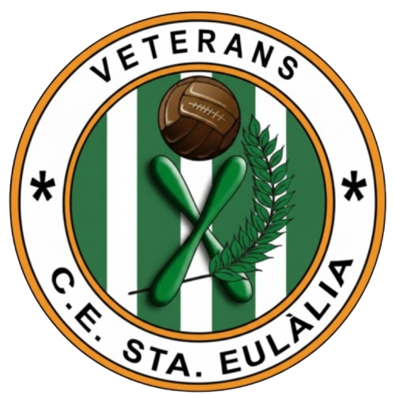 Santa Eulàlia | 2 | 6 | 2 | 0 | 0 | 8 | 5 | +3 | -GG |
| 5 | 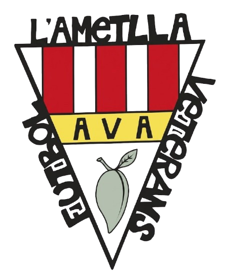 L'Ametlla | 2 | 4 | 1 | 1 | 0 | 20 | 7 | +13 | -EG |
| 6 | 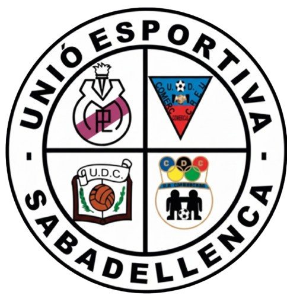 Sabadellenca | 2 | 4 | 1 | 1 | 0 | 9 | 5 | +4 | -EG |
| 7 | 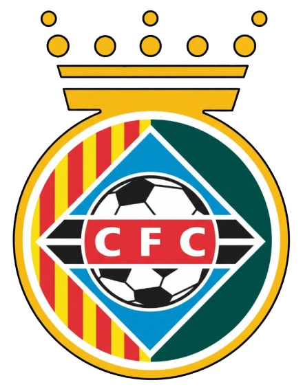 Cerdanyola | 2 | 3 | 1 | 0 | 1 | 6 | 4 | +2 | -PG |
| 8 | 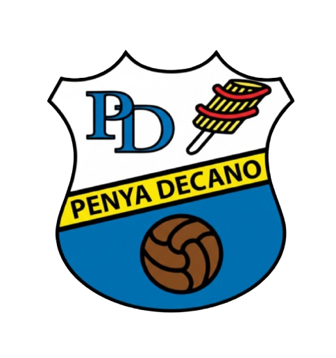 Penya Decano | 2 | 3 | 1 | 0 | 1 | 8 | 6 | +2 | -GP |
| 9 | 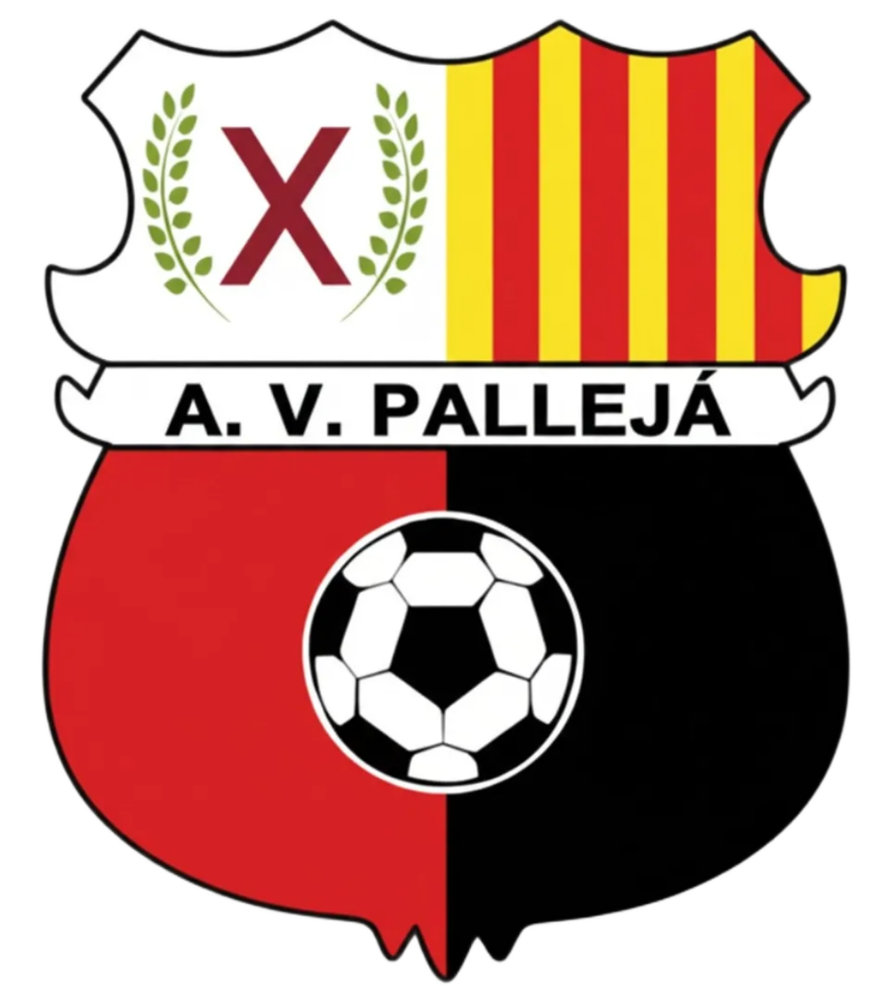 Pallejà | 2 | 3 | 1 | 0 | 1 | 6 | 5 | +1 | -GP |
| 10 | 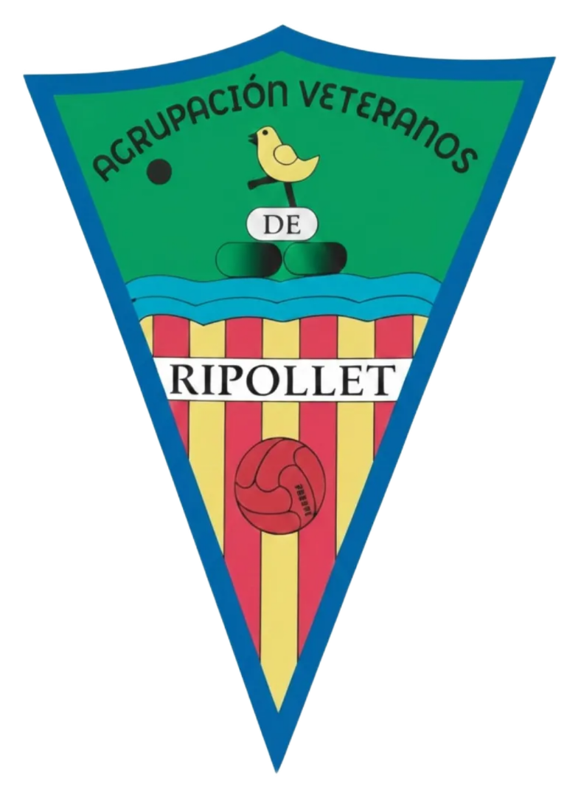 A.V. Ripollet | 2 | 3 | 1 | 0 | 1 | 6 | 7 | -1 | -PG |
| 11 | 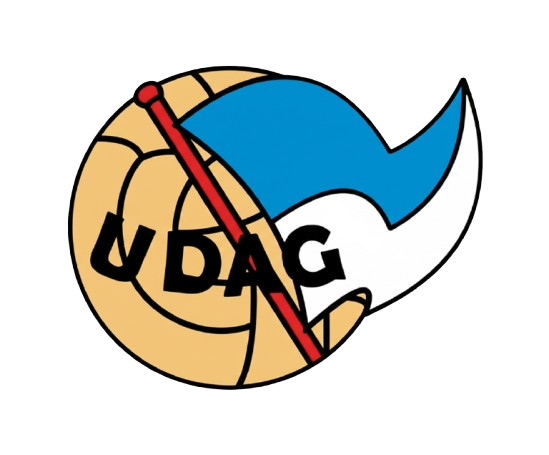 Gramanet | 2 | 1 | 0 | 1 | 1 | 3 | 5 | -2 | -EP |
| 12 | 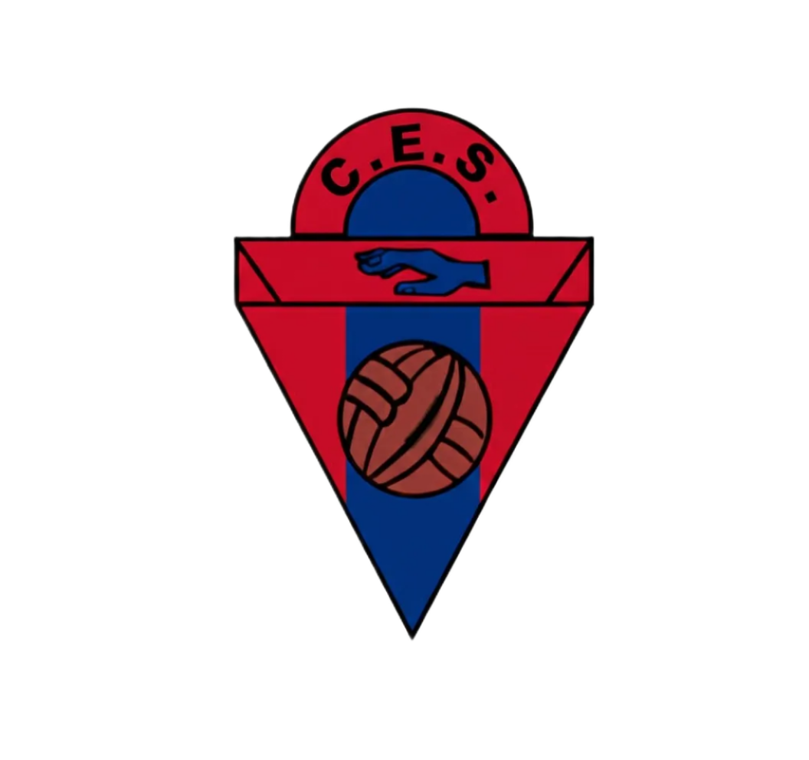 Sentmenat | 2 | 1 | 0 | 1 | 1 | 4 | 7 | -3 | -EP |
| 13 | 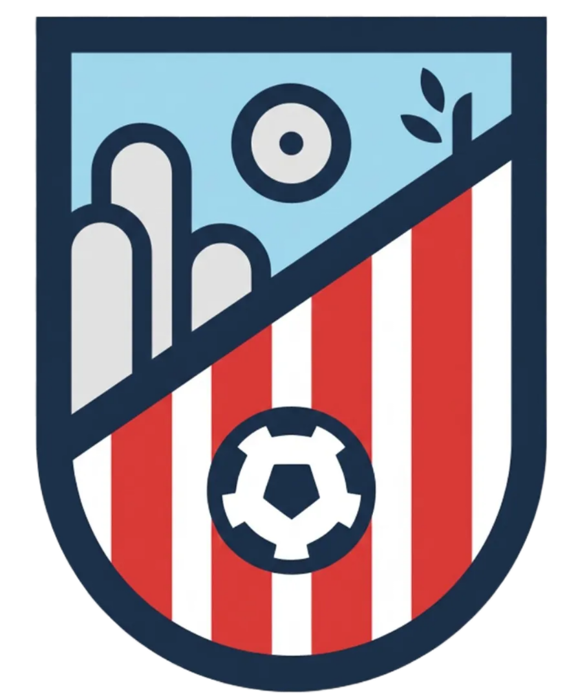 Sant Feliu | 2 | 0 | 0 | 0 | 2 | 3 | 7 | -4 | -PP |
| 14 | Palau Plegamans | 1 | 0 | 0 | 0 | 1 | 3 | 6 | -3 | --P |
| 15 |  Canovelles Canovelles | 1 | 0 | 0 | 0 | 1 | 1 | 4 | -3 | -P- |
| 16 | 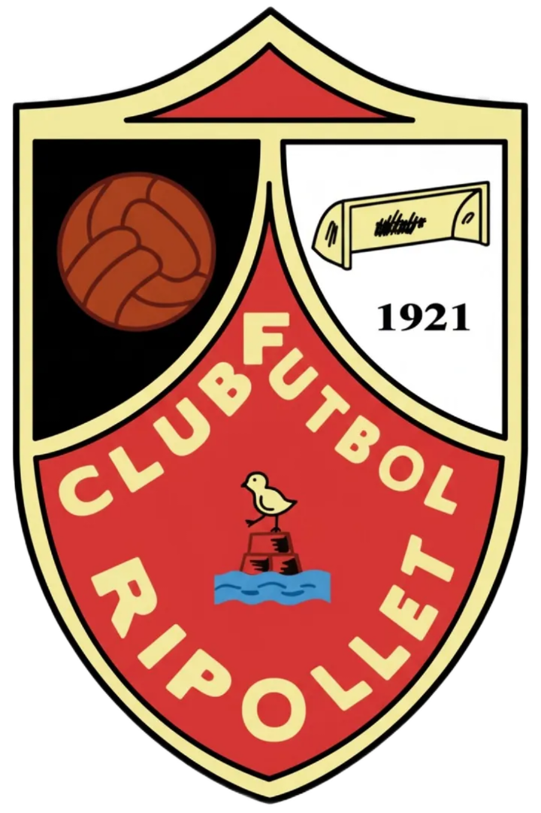 VCF Ripollet | 2 | 0 | 0 | 0 | 2 | 4 | 10 | -6 | -PP |
| 17 | 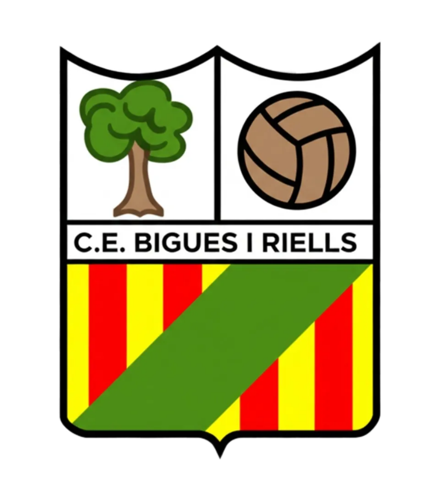 Bigues | 2 | 0 | 0 | 0 | 2 | 4 | 21 | -17 | -PP |
JORNADA 4 · CLASIFICACIÓN
A.V. L'Ametlla del Vallés
VS
C.E. Santa Eulàlia de Ronçana
📍 MPAL L'AMETLLA | 🕒 DOMINGO 08:30 | 👤 Duran
A.V. Pallejá
VS
V.C.F. Ripollet
📍 MPAL PALLEJA | 🕒 DOMINGO 08:15 | 👤 Molina
U.E. CanovellesVS
U.E. Sabadellenca
📍 MPAL CANOVELLES | 🕒 DOMINGO 08:00 | 👤 Exposito
E.F.B Palau Solitá i Plegamans
VS
C.E. Bigues i Riells
📍 MPAL PALAU | 🕒 DOMINGO 08:00 | 👤 Fàbregas
C.F. Sant Feliu de Codines
VS
C.F. Barberá📍 MPAL SANT FELIU | 🕒 DOMINGO 08:00 | 👤 Edu
U.D.A. Gramanet
VS
C.F. Can Parellada
📍 MPAL GRAMANET | 🕒 DOMINGO 08:00 | 👤 Congost
Penya Decano
VS
C.F. Cerdanyola
📍 MPAL LA FERRERIA | 🕒 DOMINGO 08:00 | 👤 Salva
A.V. Ripollet
VS
C.E. Sentmenat
📍 MPAL RIPOLLET | 🕒 DOMINGO 08:00 | 👤 Julio